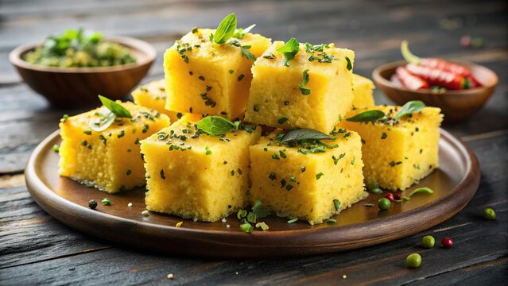

Dhokla

A Savory Delight from Gujarat
Dhokla is a popular Indian snack that originates from the state of Gujarat. It is a steamed, savory cake made from fermented rice and chickpea batter. Dhokla is known for its light and fluffy texture, tangy flavor, and vibrant yellow color, which comes from the addition of turmeric.
Flavor profile: Dhokla has a unique combination of tangy, spicy, and slightly sweet flavors. The fermentation process gives it a distinct tanginess, while the addition of green chilies, ginger, and mustard seeds adds a spicy kick. A sprinkle of sugar can balance the flavors and enhance the overall taste.
Serving suggestions: Dhokla is often served with green chutney, tamarind chutney, or a sprinkle of sev (crispy chickpea noodles) on top for added texture and flavor. It can be enjoyed as a breakfast item, snack, or even as a light meal.
Ingredients
- 1 cup gram flour (besan)
- 1/2 cup semolina (rava)
- 1 cup yogurt (curd)
- 1/2 cup water
- 1 tablespoon lemon juice
- 1 teaspoon sugar
- 1/2 teaspoon turmeric powder
- 1 teaspoon ginger paste
- 2 green chilies, finely chopped
- 1 teaspoon mustard seeds
- 1 tablespoon oil
- Salt to taste
- Fresh coriander leaves for garnish
Steps
- In a mixing bowl, combine the gram flour, semolina, yogurt, water, lemon juice, sugar, turmeric powder, ginger paste, chopped green chilies, and salt. Mix well to form a smooth batter. Let it ferment for 4-6 hours or overnight for best results.
- Grease a steaming tray or a round cake pan with oil. Pour the fermented batter into the tray and spread it evenly.
- In a small pan, heat oil and add mustard seeds. Once they start to splutter, pour this tempering over the batter in the tray.
- Steam the dhokla in a steamer or pressure cooker (without the whistle) for about 15-20 minutes or until a toothpick inserted into the center comes out clean.
- Once cooked, remove the dhokla from the steamer and let it cool slightly. Cut it into squares or diamonds.
- Garnish with fresh coriander leaves and serve with chutneys of your choice.
Home